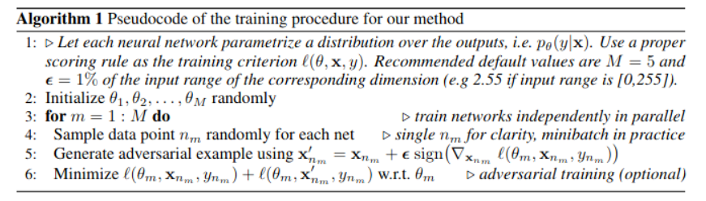

More on Bayesian Neural Networks
Contents
More on Bayesian Neural Networks¶
Bayes by backprop¶
In 2015 Blundel et al proposed Bayes by Backprop which consists on replacing the ELBO
with monte-carlo estimates
where \(N\) is the number of data samples in the minibatch and \(K\) is the number of times we sample from the parameters \(\theta\). This formulation is more general, because it does not depend on closed-form solutions of the KL
Thanks to this flexibility more complex priors can be used. In the original Bayes-by-backprop paper the following is considered
with \(\sigma_1 \ll \sigma_2\). The term with smaller variance allows for automatic “shut-down” (pruning) of weights, i.e. sparsification
See also
BLiTZ is a PyTorch-based library that implements Bayes by Backprop to train BNNs
The local reparametrization trick¶
In BNN we sample from every weight as
using the reparameterization trick to reduce variance
The idea behind the [local reparameterization (Kingma, Sallimans and Welling, 2015)](](http://papers.nips.cc/paper/5666-variational-dropout-and-the-local-reparameterization-trick) is that instead of sampling from every weight we sample from the pre-activations
then
where \(\epsilon\) is still a standard normal and \(\nu_i = \sum_j x_j \mu_{ji}\) and \(\eta_i = \sqrt{\sum_j x_j^2 \sigma_{ji}^2}\)
This reduces the amounts of samples we take by orders of magnitude and further reduces the variance of the estimator
FLIPOUT¶
Decorrelation of the gradients within a minibatch speeding up bayesian neural networks with gaussian perturbations
Dropout as a Bayesian approximation¶
This is an alternative take on BNNs based on representing uncertainty based on dropout technique (Gal and Gharahmani, 2015)
Dropout turns-off neurons following a certain distribution. The authors argue that this is like having an ensemble of neural networks and hence uncertainties can be computed. This is done by applying dropout not only during training but also when predicting (test set) to estimate uncertainty
This short letter critiques this application of dropout, and shows that uncertainty with this approach (fixed dropout probability) does not decrease as new data points arrive. A solution to this?
Deep ensembles¶
Another alternative take on BNN based on ensembles of deterministic neural networks trained using MAP (Laksminarayanan, Pritzel and Blundell, 2016).
Predicting with an ensemble of deterministic neural networks would return a sample of predictions, which can then be used as a sort of posterior distribution. The key is how to introduce randomness so that there is diversity in the ensemble
One way to do this is by using bagging (bootstrap resampling), i.e. training the deterministic NNs with subsamples of the training data (drawn with replacement). But this has been shown to be worse than using the full dataset for all the individual classifiers (Nixon, Laksminarayanan and Tran, 2020)
In the original paper the randomization comes only from
The initial values of parameters of the neural networks (default pytorch initialization)
The shuffling of training data points
One key aspect of this work is that to smooth the predictive distributions, adversarial examples are used. They also highlight the use of the variance of the predictions in the case of regression. The full algorithm goes as follows
{kind=link}
The paper compares ensembles with MC-dropout (which can also be interpreted as an ensemble method), showing that it is much better at detecting out-of-distribution samples. (Gustafsson et al 2020) obtains a similar result when comparing ensembles and MC-dropout for computer vision architectures. A more through comparison (including SVI and other alternatives) is given in Ovadia et al. 2019
More theoretical insight on the difference between ensemble and variational solutions is given in (Fort 2020)
(Dusenberry et al 2020) proposes an interesting alternative of combining BNN and ensembles
Other non-bayesian approaches for detecting out-of-distribution are presented in (Hendrinks and Gimpel, 2016) and (Guo et al. 2017) (temperature scaling)
What are Bayesian Neural Networks Posteriors Really Like¶
In this work by (Izmailov et al. 2021) deep neural networks are trained using Hamiltonian Monte Carlo (HMC). HMC (and MCMC methods in general) guarantees asymptotically exact samples from the true posterior.
The authors recognize that training deep nets with MCMC is computationaly expensive to implement in practive, with respect to SVI. The focus of the paper is on evaluating how good are the approximate posteriors and deterministic approximations used on SVI. They show that
BNN can perform better than regular training and deep ensembles
A single HMC chain provides a comparable posterior to running several shorter chains
Posterior tempering (temperature scaling) is actually not needed
High variance Gaussian priors led to strong performance and results are robust to the scale. Performance using Gaussian, MoG and logistic priors is not too different. A vague prior in parameter space is not necessarily a vague prior in function space. This result is very conflicting with (Fortuin et al. 2021)!
BNN have good performance on out-of-distribution samples but perform poorly under domain shift (ensembles are better in this case)
The predictive distribution of the compared methods differs from that of HMC. Ensembles seem to be closer to HMC than mean-field VI (MFVI). But in terms of entropies they HMC is more overconfident than MFVI
Assorted list of interesting discussions¶
An interesting post by Andrew G. Wilson on some misunderstandings about Bayesian deep learning and the difference with deep ensembles
A tutorial on Bayesian Neural Networks by Wesley Maddox (from the group of A.G. Wilson). Fundamentals and recent works
Yes, but Did it Work? Evaluating Variational Inference: Two diagnostic algorithms to assess problems in variational approximations of posterior distributions